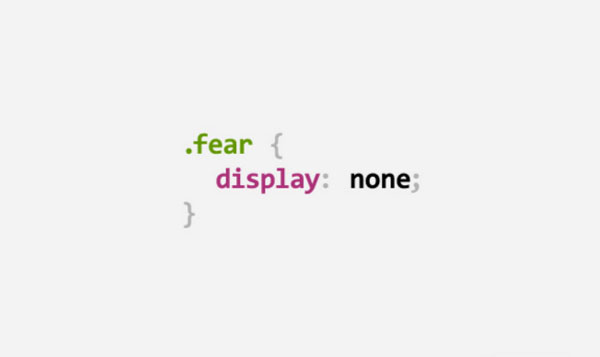
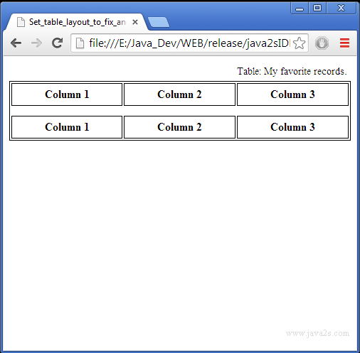
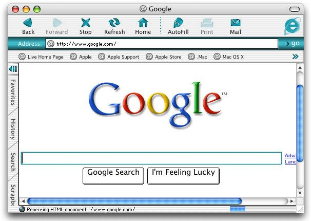
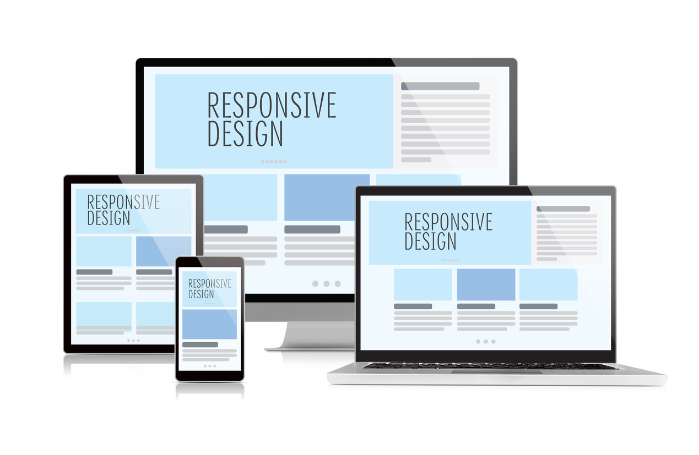
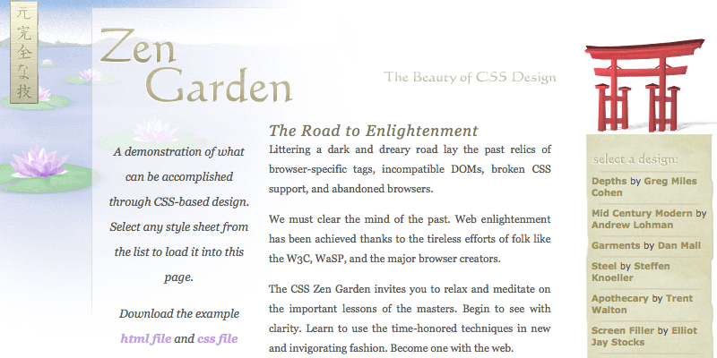

1989
Ontwikkeling WWW
Tegen het einde van de jaren 80 was Tim Berners-Lee klaar om het netelige probleem van informatiebeheer op grotere schaal aan te pakken. Om een buy-in te krijgen bij CERN maakte hij een bescheiden document met de titel Information Management: A Proposal. Gelukkig erkende zijn supervisor, Mike Sendall, het potentieel van het idee en gaf hij groen licht door de woorden “vaag maar opwindend” boven op het papier te schrijven. Dat voorstel zou het World Wide Web worden.
1990
HTML 1.0

HTML was niet de eerste opmaaktaal die bij CERN werd gebruikt. Wetenschappers deelden al documenten geschreven in SGML — Standard Generalized Markup Language. Tim Berners-Lee nam dit bestaande vocabulaire van CERN SGML en gebruikte het als uitgangspunt voor zijn nieuwe opmaaktaal: HTML. De eerste versie van HTML bevatte in totaal 21 elementen. Veel van die elementen zijn vandaag nog steeds bij ons - TITLE, P, UL, LI, H1, H2, enz., En natuurlijk het A-element. Anderen zijn buiten de boot gevallen - ISINDEX, PLAINTEXT, LISTING, HP1, HP2, etc.
1994
Voorstelling nieuw formaat presentatie HTML
Håkon Wium Lie herkende het potentieel van het World Wide Web en de taal HTML. Hij realiseerde zich ook dat de expressieve kracht van de taal dreigde te worden overspoeld door visuele kenmerken. Lie stelde, samen met Bert Bos, een nieuw formaat voor om de presentatie van HTML-documenten te beschrijven: Cascading Style Sheets.
1996
HTML TABLE-element
TABLE-element was bedoeld om tabelgegevens te beschrijven. Maar met de juiste waarden toegepast op de breedten en hoogten van tabelcellen, kan het worden gebruikt om vrijwel elke gewenste lay-out te maken. Dit waren hacks; slimme oplossingen voor lastige problemen. Maar ze hadden ongelukkige gevolgen. Ontwerpers behandelden HTML als een hulpmiddel voor het uiterlijk van inhoud in plaats van een taal voor het beschrijven van de betekenis van inhoud. CSS was een oplossing voor dit probleem.
1998
Web Standards Project

Een van de redenen waarom webontwerpers geen CSS gebruikten, was het gebrek aan browserondersteuning. Eén browser zou een nieuw HTML-element of attribuut uitvinden. De andere browser zou zijn eigen afzonderlijke element of kenmerk uitvinden om precies hetzelfde te doen. Een groep webontwerpers besloot dat het genoeg was. Ze kwamen bijeen onder de vlag van het Web Standards Project.
1999
Introductie Internet Explorer 5 Mac
Het tij begon te keren met de lancering van Internet Explorer 5 voor de Mac, een browser die werd geleverd met indrukwekkende CSS-ondersteuning.
2001
Eerste 'responsieve' website
De eerste website die zich aanpast aan de breedte van het scherm van de gebruiker is audi.com. Deze eerste versie van een werkend responsive design, dat in die tijd nog beschreven werd als ‘flexible’, ‘liquid’, ‘fluid’ en ‘elastic’, werd ontwikkeld door een team van het bedrijf Razorfish.
2003
Zen Garden: Demonstratie kracht van CSS
De beste demonstratie van de kracht van CSS was een website genaamd CSS Zen Garden, gemaakt door Dave Shea. Het was een showcase van prachtige en gevarieerde ontwerpen, allemaal gerealiseerd met CSS. Cruciaal is dat de HTML hetzelfde is gebleven. Het zien van hetzelfde HTML-document in veelvoud van verschillende vormgevingen demonstreerde de gunstige effecten van CSS: scheiding van zorgen.
2010
Opkomst Responsive Web Design
Voor het eerst werd de term “Responsive Web Design” gebruikt door Ethan Marcotte in zijn artikel ‘A List Apart’. Door hem is het idee ontstaan om de computer via een URL te laten achterhalen of de gebruiker de website bekijkt op een telefoon, tablet, laptop of desktop.
2012
Populariteit Responsive Web Design stijgt
Bedrijven werden bewust van het feit dat steeds meer bezoekers hun website niet langer bezochten via de ‘traditionele’ apparaten, maar steeds vaker via een mobiel apparaat. Dit zorgde ervoor dat men dieper ging graven naar een goede oplossing om websites perfect weer te geven op mobiele apparaten. Die oplossing was Responsive Web Design.
2019
Huidige situatie
Momenteel zijn er wereldwijd zo’n 4.3 miljard internetgebruikers. 90% van hen gebruikt iedere dag verschillende schermgroottes op verschillende apparaten. Bijna 2 van elke 3 minuten die online zijn gespendeerd is gedaan op een mobiel apparaat. Dit drietal statistieken geeft weer hoe belangrijk Repsonsive Web Design is geweest en nog steeds is.